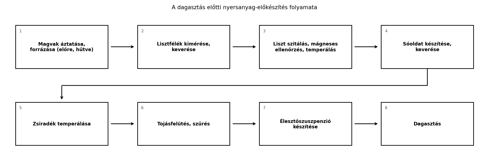

Hajnali háromkor a pék a dagasztás előtt egymás után veszi elő a lisztzsákokat, az élesztőt, a sót, a tojást és az áztatott magvakat. Ha a lisztet nem szitálják át, a tésztába zsinór, papírdarab vagy lisztcsomó kerül. Ha az élesztőt túl forró vízbe szórják, a kenyér nem kel meg. Ha a sóoldatot nem keverik fel, az egyik dagasztás sótlan, a másik túl sós lesz. A nyersanyagok előkészítése nem felesleges idő, hanem a termékbiztonság, az egyenletes minőség és a gépvédelem alapja. Ebben az alfejezetben lépésről lépésre megtanulod, hogyan kell a dagasztás összes nyersanyagát biztonságosan és a technológiai előírásnak megfelelően előkészíteni.
A következő folyamatábra a dagasztás előtti előkészítő műveletek helyes sorrendjét mutatja.

A sorrend nem véletlen: a leghosszabb idejű előkészítést, a magvak 1–4 órás áztatását vagy forrázását indítjuk elsőként (előző nap vagy a műszak elején, hűtve tárolva), majd a száraz anyagokat készítjük elő, hogy a keveréskor ne kerüljön idegen anyag a tésztába; a rövid, „azonnal felhasználandó” műveletek (tojás felütése, élesztőszuszpenzió) kerülnek közvetlenül a dagasztás elé. A liszt hőmérséklete befolyásolja a dagasztóvíz hőmérsékletét, ezért a temperálás a vízhőmérséklet-számítás előtt fontos.
Definíció. A nyersanyag-előkészítő művelet minden olyan fizikai, mechanikai vagy kémiai művelet, amely a nyersanyagot a dagasztásra, keverésre vagy feldolgozásra alkalmassá teszi: szitálás, temperálás, keverés, oldás, szuszpendálás, lágyítás, áztatás, forrázás, szűrés.
Szabály. Előkészítés előtt mindig ellenőrizd a nyersanyag: - jelölését (név, tételszám, lejárati idő, allergén jelölés), - érzékszervi állapotát (szag, szín, állag), - hőmérsékletét, ha a technológia előírja.
HACCP. A nyersanyag-előkészítés kritikus pont lehet, mert itt kerülhet be idegen anyag (fém, kő, csomagolódarab), itt szaporodhatnak el a mikrobák (tojás, élesztőszuszpenzió, áztatott magvak melegen tartva), és itt következhet be allergén keresztszennyeződés. A konkrét határértékeket (pl. szitaméret, mágnesellenőrzés gyakorisága, hűtési hőmérséklet) mindig a pékség HACCP-terve és az aktuális hatósági útmutató szerint kell meghatározni (ellenőrizendő).
A lisztszitálás célja: - a csomók, összeállt részek fellazítása, - a durva szennyeződések (zsákrost, zsinór, papír, rovar, kő) visszatartása, - a liszt levegőztetése, ami javítja a dagasztás indulását, - a fémrészecskék eltávolítása mágneses szeparátorral.
Eljárás. A lisztet szitán vagy rosta-gépen engedik át. Kis üzemben kézi vagy rázkódó szita, nagyobb üzemben pneumatikus szállítóba épített szita és mágnesdob használható. A szita lyukbősége jellemzően 0,8–1,2 mm, de ez lisztfajtától és technológiától függ (ellenőrizendő: gyártói adatlap, üzemi technológiai lap). A mágneses szeparátor a vas- és acélszennyezőket fogja meg. A mágneseket rendszeresen tisztítani kell, és a leválasztott anyagot dokumentálni.
Gépbiztonság. A szitát, mágnest és csigát csak leállított, áramtalanított, újraindítás ellen biztosított állapotban szabad tisztítani vagy ellenőrizni. A forgó dob, a vibráló rács és a szíjhajtás sérülést okozhat. A védőburkolatot eltávolítani tilos.
Egy kisüzemi forgódobos szitáló szerkezetét az alábbi kivágott rajz mutatja: a garatba (1) ürített lisztet a felhordó csiga (2) a szitadobba (3) emeli; a szitabetéten (4) átjutó liszt a kifolyón át, a mágnesrácson (6) keresztül a kiömlőn (7) a dagasztóba jut, a visszatartott csomó és idegen anyag a szitamaradék-kivezetésen (5) távozik. A hajtómotort és a szíjhajtást (8) védőburkolat fedi, a gépet a főkapcsolóval (9) lehet leválasztani.
A két ellenőrzési pont: a szitabetét épsége – a szakadt szitán a csomó és az idegen anyag is átjut a tésztába – és a mágnes tisztítása, amikor a megtapadt fémrészecskéket el kell távolítani, és a talált mennyiséget dokumentálni kell, mert a hirtelen több fém gépkopásra vagy szennyezett lisztre utal. Mindkettő csak leállított, a főkapcsolóval leválasztott, újraindítás ellen biztosított gépen végezhető (ellenőrizendő: a gép kezelési utasítása és a HACCP-terv). A HTML-kiadásban a rétegek (burkolat, szita, mágnes, a liszt útja, szakadt szita) ki-be kapcsolhatók.
Definíció. A liszt temperálása a liszt hőmérsékletének tudatos beállítása a kívánt tésztahőmérséklet eléréséhez. A liszt hőmérséklete a dagasztóvíz hőmérsékletének számításánál az egyik kiinduló adat.
Szabály. A temperálás tipikus célértéke 18–26 °C, de ez a terméktől, az évszaktól és az üzem hőmérsékletétől függ (ellenőrizendő: üzemi technológiai lap). Télen a hideg lisztet fűtött helyiségben vagy temperáló silóban kell felmelegíteni, nyáron a meleg lisztet hűvösebb tárolóban kell tartani. A liszt hőmérsékletét hőmérővel ellenőrizd, mielőtt a dagasztóvíz hőmérsékletét kiszámítod.
Definíció. A lisztkeverés két vagy több lisztféleség homogén elegyítése a technológiai előírás szerint, például BL 55 és BL 80, vagy búzaliszt és rozsliszt arányos keverése.
Szabály. A keverést zárt keverőcsigában vagy keverődobban végezd, és ügyelj a homogenitásra. A keverési arányt lisztre vetített százalékban adjuk meg. A keveréket felhasználás előtt legalább egy, de inkább több perces keveréssel tedd egyneművé. A kevert lisztet is szitáljuk, mert a keverés csomókat hozhat létre.
Továbbvitt eredmény. A szitálás, temperálás és keverés gépi megoldásait a Mérlegek, adagolók és a víz-, só- és élesztő-előkészítő berendezések alfejezetben tárgyaljuk; a temperálás hőmérsékletét a Tésztahőmérséklet és dagasztóvíz számítása alfejezetben használjuk.
A friss préselt élesztőt és az aktív szárított élesztőt többnyire vízben eloszlatva, szuszpenzióként adjuk a tésztához. Az élesztőszuszpenzió élő sejteket tartalmaz, ezért hőmérséklete kritikus.
Eljárás. 1. Mérj ki a technológiai lap szerinti élesztőmennyiséget. 2. Friss élesztőt morzsolj kézmeleg, kb. 25–30 °C-os vízbe; aktív szárított élesztőt 30–35 °C-os vízben futtass fel 5–15 percig (ellenőrizendő: gyártói adatlap). 3. Keverd el, hogy szemcsék ne maradjanak a szuszpenzióban. 4. Az élesztőszuszpenziót azonnal használd fel; ne tartsd melegen hosszabb ideig, mert a sejtek erjedni kezdenek, és a szuszpenzió megsavanyodik. 5. Az instant élesztőt közvetlenül a liszthez keverheted, nem kell előzetesen felfuttatni.
Higiénia. Az élesztő felbontása után a csomagolóanyagot az élelmiszer-hulladéktól elkülönítve kezeld. A kiömlött élesztőszuszpenziót azonnal töröld fel, mert csúszásveszélyt és mikrobás felületet okoz.
HACCP. Az élesztőszuszpenzió hőmérséklete kritikus: 40 °C felett az élesztősejtek károsodnak, 50 °C felett elpusztulnak. A szuszpenzió készítésénél mérd a vízhőmérsékletet, és a technológiai lap szerinti határértéket tartsd be (ellenőrizendő: gyártói adatlap, HACCP-terv).
A sót a tésztában egyenletesen kell eloszlatni. Ha száraz sót adunk a tésztához, az lassan oldódik, és a sikeret érdesíti, ezért gyakori a sóoldat használata.
Definíció. A sóoldat a konyhasó vizes oldata, amelyet a só pontos adagolására és egyenletes eloszlására használunk. Koncentrációját tömegszázalékban adjuk meg.
Számítás. Ha 22 m/m%-os sóoldatot készítesz, akkor 100 kg oldathoz 22 kg só és 78 kg víz szükséges. Az oldat sótartalma:
ahol a koncentráció (m/m%). Fordítva: ha a tésztához só kell, a szükséges oldattömeg:
Eljárás. 1. Töltsd a keverőtartályba a mért vízmennyiséget. 2. Add hozzá a kimért sót, és keverd, amíg teljesen feloldódik. 3. Ellenőrizd az oldat sűrűségét vagy koncentrációját (pl. sűrűségmérővel vagy mérési jegyzőkönyvvel). 4. Használat előtt mindig keverd fel: ha a só nem oldódott fel teljesen, vagy utántöltöttek a tartályba, a koncentráció egyenetlen lehet (alul oldatlan só). Teljes oldódás után a sóoldat nem ülepedik.
Gépbiztonság. A sóoldattartály keverőjét csak zárt fedéllel, védőráccsal üzemeltesd. A tisztítást leállított, áramtalanított gépen végezd.
A margarin, vaj vagy zsír a tésztában csak akkor oszlik el jól, ha megfelelően lágy. A túl hideg zsiradék darabosan marad, a túl meleg pedig szétkenődik, és a tészta zsíros, ragacsos lesz.
Eljárás. A zsiradékot a technológiai lap szerinti hőmérsékletre temperáld. Margarin és vaj esetén ez jellemzően 18–22 °C, de a leveles tésztához hidegebb, a kevert tésztához lágyabb zsiradék kell (ellenőrizendő: üzemi technológiai lap). A zsiradékot darabold, és hagyd a felhasználási helyen temperálódni; ne olvaszd fel teljesen, mert akkor elveszti a tésztalazító hatását.
A tojást a tésztához általában tojásléként adjuk. A tojás mikrobiológiai kockázatot hordoz, ezért az előkészítése során szigorú higiéniát kell tartani.
Eljárás. 1. A tojást használat előtt ellenőrizd: héja ép, szagtalan, jelölése megfelelő. 2. Minden tojást egyesével üss fel egy külön edénybe, és nézd meg, nem romlott-e. A romlott tojást azonnal dobd ki. 3. A felütött tojásokat szűrd át, hogy a héjdarabok és az összefüggő jégzsinór ne kerüljön a tésztába. 4. A tojáslét hűtve tárold, és a lehető leghamarabb használd fel. Szobahőmérsékleten ne tárold. 5. A tojáslével érintkezett eszközöket forró vizes mosogatással tisztítsd.
HACCP. A tojás Salmonella kockázatot jelent. A feltört tojást hűtve kell tárolni (ellenőrizendő: a pékség HACCP-terve, 852/2004/EK rendelet szerinti előírás). A tojáslét nem szabad a munkapulton hosszabb ideig hagyni; a felhasználhatósági időt az üzemi technológiai lap rögzíti.
Definíció. Az áztatás során a magvakat, aszalt gyümölcsöket vagy rozsdarabot hideg vagy langyos vízben duzzasztjuk, hogy a tésztában puhábbak legyenek, és ne vonják el a vizet a sikértől.
Eljárás. 1. Mérj ki a technológiai lap szerinti magkeveréket (pl. lenmag, napraforgómag, tökmag, szezámmag, zabpehely). 2. Adj hozzá vizet, jellemzően 1:1–1:2 arányban a mag tömegéhez képest (ellenőrizendő: üzemi technológiai lap). 3. Az áztatási idő 1–4 óra, a mag fajtájától függően. A lenmag és a zabpehely több vizet vesz fel. 4. Az áztatott magvakat a dagasztás előtt alaposan csorgasd le, vagy számold be a felesleges vizet a dagasztóvízbe. 5. Az áztatott anyagot hűtve (≤ 5 °C, legfeljebb 8 °C; ellenőrizendő: HACCP-terv) tárold; szobahőmérsékleten legfeljebb az áztatási ideig (pl. 1–4 óra) álljon, mert erjedés és penész indulhat (ellenőrizendő: HACCP-terv).
Számítás. Ha 10 kg napraforgómaghoz 10 kg vizet adunk, és a mag 6 kg vizet vesz fel, az áztatott tömeg 16 kg, a maradék víz 4 kg. A vízfelvétel:
Definíció. A forrázás forró vízzel (90–100 °C) való leöntés és keverés. Célja a keményítő csirizesedése, a liszt vagy magvak jobb duzzadása, egyes enzimek inaktiválása, és a felszíni mikrobák egy részének csökkentése.
Eljárás. 1. Mérj ki a forrázandó anyagot (pl. rozsliszt, magkeverék, rozsdarab). 2. Forralj vizet, vagy használj a technológiában előírt hőmérsékletű vizet. 3. Öntsd a forró vizet az anyaghoz, és azonnal keverd el, hogy ne képződjön csomó. 4. A forrázatot takard le, és hagyd duzzadni a technológiai idő szerint. 5. Hűtsd le gyorsan, ha nem azonnal használod, mert a forrázott anyag kiváló táptalaj a mikrobáknak.
HACCP. A forrázott anyag hűtése kritikus pont lehet. Ha a forrázatot nem használjuk fel azonnal, gyorsan (pl. sekély edényben) hűtsük le ≤ 5 °C-ra (legfeljebb 8 °C-ra), és hűtve tároljuk; a veszélyes hőmérsékleti tartományban (a könyvben kb. 5–60 °C, lásd A mikrobák gátlása és elpusztítása; ellenőrizendő: HACCP-terv) töltött időt minimalizáljuk, mert a meleg, nedves közegben a spórás baktériumok (pl. Bacillus cereus) elszaporodhatnak (tanulási példa; ellenőrizendő: HACCP-terv, 852/2004/EK szerinti jó higiéniai gyakorlat).
Magvas kenyereknél a magkeveréket gyakran előtészta részeként készítik el: az áztatott magvakhoz egy kevés kovászt vagy élesztőt és sót adnak, és rövid időre állni hagyják. Ez javítja az ízt és a tészta szerkezetét. Az ilyen előtésztát a Kovászolás fejezetben tanulod meg részletesen; itt az előkészítő művelet a magvak hidratálása és hűtése.
HACCP. Az idegenanyag-kockázat a nyersanyag-előkészítés egyik legfontosabb veszélye. A lisztszitálás, a mágneses szeparátor és a tojásszűrés önmagában nem elég: a szitát és a mágneseket rendszeresen ellenőrizni és tisztítani kell, a leválasztott idegen anyagot dokumentálni, és a gyanús tételt vissza kell tenni a reklamációt elindító eljárásba.
Eljárás. 1. Minden műszak elején ellenőrizd a szita épségét és a mágneseket. 2. A mágnesekről a fémdarabokat gyűjtsd össze, és írd fel a tételszámot. 3. Ha idegen anyagot találsz, a nyersanyagot különítsd el, és értesítsd a műszakvezetőt. 4. A szita alatti gyűjtőedényt ne hagyd túltelni, mert a finom liszt átfújhat.
Allergén. A nyersanyag-előkészítés során az allergén anyagok (tojás, tej, szezám, dióféle, glutén) külön eszközöket igényelnek, vagy a sorrendet úgy kell kialakítani, hogy az allergénmentes tételek előbb készüljenek. A közös szita, keverő, mérőedény keresztszennyezést okozhat. Az allergénmentes termékekhez használt eszközöket külön kell tisztítani és tárolni.
Dokumentálás. Az előkészítő műveletekről vezetett napló tartalmazza: - az előkészített nyersanyag nevét és tételszámát, - a mért mennyiségeket, - a szitálás és mágnesellenőrzés eredményét, - a hőmérsékleti méréseket (liszt, víz, élesztőszuszpenzió, áztatott magvak), - az esetleges eltéréseket és helyesbítéseket.
A napló a HACCP-dokumentáció része, és a hatósági ellenőrzésen is kérhetik.
Adott: 22 m/m%-os sóoldatot kell készíteni. A tésztához 2,2 kg só szükséges.
Keresett: Mennyi sóoldatot kell kimérni a dagasztáshoz?
Képlet:
Behelyettesítés:
Ellenőrzés: 10 kg oldat 22%-a valóban 2,2 kg só. A sóoldatot felhasználás előtt fel kell keverni, mert ha a só nem oldódott fel teljesen vagy utántöltöttek, a koncentráció egyenetlen lehet; teljes oldódás után a (telítetlen) oldat nem ülepedik. ∎
Adott: 1,0 kg aktív szárított élesztőt kell felfuttatni. A gyártói utasítás szerint a felfuttató víz tömege az élesztő tömegének 5-szöröse, hőmérséklete 35 °C.
Keresett: Mennyi vizet kell kimérni, és mennyi lesz a szuszpenzió tömege?
Képlet:
ahol .
Behelyettesítés:
A szuszpenzió tömege:
Ellenőrzés: A 6,0 kg-os szuszpenzióban az élesztő aránya 1 kg / 6 kg ≈ 16,7 m/m%. A víz hőmérsékletét hőmérővel mérjük, mert 40 °C felett az élesztő károsodik. ∎
Adott: 8 kg lenmagot áztatunk. A gyártási tapasztalat szerint a lenmag a száraz tömegének 120%-át tudja vízként felvenni.
Keresett: Mennyi vizet adjunk hozzá, és mennyi lesz az áztatott tömeg?
Képlet:
ahol .
Behelyettesítés:
Az áztatott tömeg:
Ellenőrzés: A felvett víz a száraz tömeg 120%-a, ami 9,6 kg; a teljes tömeg 17,6 kg. Az áztatóvizet a dagasztóvíz számításánál korrigálni kell.
Válasz a kérdésre: ha leöntés nélkül dolgozunk, pontosan 9,6 kg vizet adunk hozzá, az áztatott tömeg 17,6 kg. Ha a technológia felesleggel áztat (pl. 1:1,5, azaz 12 kg víz), a fel nem vett 2,4 kg vizet lecsorgatjuk, vagy a dagasztóvízből levonjuk. ∎
A nyersanyag-előkészítés az élelmiszer-higiénia szempontjából a 852/2004/EK rendelet hatálya alá tartozik: a nyersanyagok előkészítését úgy kell végezni, hogy a szennyeződés kockázata a lehető legkisebb legyen. Az allergén anyagok kezelésére az 1169/2011/EU rendelet fogyasztói tájékoztatási követelményei vonatkoznak, a Magyar Élelmiszerkönyv sütőipari előírásai pedig a termékekre vonatkozó minőségi és jelölési kötelezettségeket tartalmazzák. A konkrét határértékeket, hőmérsékleteket és szitaméreteket mindig az üzemi HACCP-terv és a gyártói adatlapok tartalmazzák (ellenőrizendő: aktuális rendeletek, Élelmiszerkönyv, NÉBIH útmutatók).
Egy kis pékségben a diós kalács tésztájához készítettek elő tojást. A pék a tojásokat egy nagy edénybe ütötte fel, és nem vette észre, hogy az egyik tojás belseje enyhén szagos. A tojáslé bekerült a tésztába, a kalács megsült ugyan, de a kellemetlen szag a termékben maradt. A vásárló reklamált. Az ok az volt, hogy a tojásokat nem egyesével ütötték fel, hanem közvetlenül a nagy edénybe. A helyes gyakorlat: egyesével felütni, szűrni, és romlott tojás esetén a tételt azonnal kiselejtezni. A tanulság: a nyersanyag-előkészítés apró lépései a termékbiztonság utolsó védvonalát jelentik.
Cél: Egy dagasztás nyersanyagait a technológiai lapnak megfelelően, biztonságosan előkészíteni.
Eszközök és anyagok: lisztszita vagy gépi szita, mágnes, mérleg, hőmérő, keverőtartály, sóoldattartály keverővel, edények, szűrő, kanál, jelölőcímkék, előkészítési napló.
Higiénia. A dolgozó tiszta munkaruhát, hajhálót visel, ékszert nem hord. Kézmosás az előkészítés megkezdése előtt, nyersanyagváltásnál és a munkaterület elhagyása után. Sebes kézzel ne dolgozz élelmiszerrel.
Gépbiztonság. A szitát, mágnest, keverőt csak betanítás után, felügyelettel kezeld. Üzem előtt ellenőrizd a védőburkolatot, a reteszelést és a vészleállítót. Tisztítás és beavatkozás előtt a gépet állítsd le, áramtalanítsd, és biztosítsd újraindítás ellen. A forgó részek megállását várd meg.
Lépések: 1. Ellenőrizd a technológiai lapot: melyik nyersanyag milyen előkészítést igényel. 2. A lisztzsákot nyisd ki tiszta késsel, és öntsd a szitába. A lisztszitán áthullott anyagot a gyűjtőtartályba vezetik; a visszamaradt csomókat és idegen anyagot tedd a kijelölt hulladékgyűjtőbe. 3. Ellenőrizd a mágneseket: ha fémdarabot találsz, gyűjtsd össze, és jegyezd fel a tételszámot. 4. Mérd meg a szitált liszt hőmérsékletét. Ha eltér a technológiai laptól, temperáld. 5. Készítsd el az élesztőszuszpenziót a kimért vízben, a megfelelő hőmérsékleten. Keverd homogénre. 6. Készítsd el vagy keverd fel a sóoldatot, és ellenőrizd a koncentrációt. 7. A zsiradékot darabold, és temperáld a kívánt hőmérsékletre. 8. A tojásokat egyesével üsd fel, szűrd le, és a tojáslét hűtve tárold. 9. Az áztatandó magvakat mérd ki, add hozzá a vizet, és a technológiai idő szerint áztasd. Az áztatott anyagot hűtve tárold, és a vízfelesleget csorgasd le. 10. Minden műveletet jegyezz fel az előkészítési naplóba.
Ellenőrzési pontok: a liszt csomómentes, a mágnes tiszta vagy leválasztott anyaggal, a szuszpenzió homogén és nem forró, a sóoldat felkevert, a tojáslé szűrt és hűtött, a magvak duzzadtak és nem erjedtek.
Tipikus hibák: a szitát kihagyják; az élesztőt forró vízbe teszik; a sóoldatot nem keverik fel; a tojást közös edénybe ütik.
Dokumentálás: előkészítési napló, CCP-lap (szita, mágnes, hűtési hőmérséklet), esetleges eltérésjelentés.
Ez a számozott ellenőrzőlista a nyersanyag-előkészítés lépéseit foglalja össze, recept helyett mindig a technológiai lapot kell használni.
1. hiba – A lisztszitálás kihagyása. A lisztben csomó vagy idegen anyag marad, a tésztában csíkok, a késztermékben szennyezés jelenik meg. Ok: időmegtakarítás vagy a szita karbantartásának elmulasztása. Helyes gyakorlat: minden lisztet szitáljunk, a szitát rendszeresen ellenőrizzük és tisztítsuk.
2. hiba – Az élesztőt forró vízbe teszik. (Kézi, azonnal felhasznált szuszpenzióról van szó; a tárolt, gépi élesztőtej hideg vizes, lásd a Mérlegek, adagolók és a víz-, só- és élesztő-előkészítő berendezések alfejezetet.) A tészta nem kel meg, a kenyér lapos marad. Ok: a víz hőmérséklete meghaladta a 40 °C-t. Helyes gyakorlat: hőmérővel mérjük a vizet, és a gyártói adatlapon megadott 25–35 °C-os tartományt tartjuk.
3. hiba – A sóoldatot nem keverik fel. Az oldat koncentrációja a tartályban eltérő lehet: alul sósabb, felül hígabb. Ok: a só nem oldódott fel teljesen (oldatlan só a fenéken), vagy keverés nélkül utántöltöttek sót vagy vizet. Helyes gyakorlat: a sóoldatot mindig közvetlenül a kimérés előtt alaposan keverjük fel, és ellenőrizzük a koncentrációt.
4. hiba – Az áztatott magvakat hosszasan meleg helyen tartják. A magvak savanyú szagúak lesznek, penész jelenhet meg. Ok: a meleg, nedves közeg kedvez a mikrobáknak. Helyes gyakorlat: az áztatott anyagot hűtve tároljuk, és a technológiai időt betartjuk.
5. hiba – A tojást közös edénybe ütik. Egy romlott tojás az egész tojáslét tönkreteszi. Ok: az egyedi ellenőrzés elhagyása. Helyes gyakorlat: egyesével felütni, szűrni, és a romlott tojást kiselejtezni.
Önellenőrzés – válaszok:
Sorold fel a liszt előkészítésének három fő lépését, és írd le mindegyik célját egy mondatban.
Hány kg vizet kell 3,0 kg friss élesztőhöz adni, ha a szuszpenzió élesztőtartalma 15 m/m% legyen?
Egy dagasztáshoz 1,8 kg sót kell beadni 22 m/m%-os sóoldattal. Mennyi sóoldatot kell kimérni? Hány kg vizet kell hozzáadni, ha a tésztához összesen 12 kg vizet kell beadni, és a sóoldat vizét is figyelembe kell venni?
12 kg magkeveréket (len, napraforgó, tökmag) áztatunk. A magkeverék átlagos vízfelvevő képessége a száraz tömeg 90%-a. Mennyi az áztatott tömege? Ha az áztatóvízből 3,0 kg marad vissza, mennyi vizet öntöttünk a magokhoz?
Egy pékségben a műszak elején a lisztszitáló gép mágneséről 2 g fémforgácsot szedtek le. A liszt tételszáma ismert. Milyen HACCP-dokumentációt kell vezetni? Mi a helyesbítés, ha a fémszennyezés ismétlődik ugyanannál a szállítónál?
Tervezz meg egy magvas rozskenyér dagasztásának nyersanyag-előkészítési folyamatát. Add meg: milyen magvakat kell áztatni/forrázni, milyen arányban és hőmérsékleten; mikor kell a sóoldatot felkeverni; hol van a HACCP-ellenőrzési pont; milyen adatokat jegyzel fel a naplóba.
A liszt előkészítésének három fő lépése: - Szitálás: csomók, idegen anyagok eltávolítása, levegőztetés. - Temperálás: a liszt hőmérsékletének beállítása a kívánt tésztahőmérséklethez. - Keverés: több lisztféleség homogén elegyítése.
Adott: 3,0 kg friss élesztő, a szuszpenzió célkoncentrációja 15 m/m%. Keresett: víztömeg. Képlet: Behelyettesítés: Ellenőrzés: a teljes szuszpenzió 20 kg, az élesztő aránya 3/20 = 15%. ∎
Adott: , , összes víz 12 kg. Keresett: , és a hozzáadandó tiszta víz. Képlet: (kerekítve 8,2 kg). A sóoldatban lévő víz: . Hozzáadandó tiszta víz: . Ellenőrzés: 8,2 kg sóoldat + 5,6 kg víz = 13,8 kg folyadék, ebből só 1,8 kg, víz 12 kg. ∎
Adott: száraz magtömeg 12 kg, vízfelvétel 90%, visszamaradt víz 3,0 kg. Keresett: áztatott tömeg, hozzáadott víz. Felvett víz: . Áztatott tömeg: . Hozzáadott víz: felvett + visszamaradt = . Ellenőrzés: 22,8 kg áztatott anyag + 3,0 kg maradék víz = 25,8 kg; a 12 kg mag + 13,8 kg víz = 25,8 kg. ∎
Dokumentálni kell az előkészítési naplóban: a fémszennyezés tömegét, a liszt tételszámát, a mágnes ellenőrzésének időpontját. A HACCP-terv szerint ez egy CCP-monitoring adat. Ha a fémszennyezés ismétlődik ugyanannál a szállítónál, helyesbítésként a tételt el kell különíteni, a szállítót értesíteni kell, és reklamációs jegyzőkönyvet kell felvenni. A további liszt beszállítása felfüggeszthető, amíg a szállító nem igazolja a hiba okát és megszüntetését. Az eljárás a nyomonkövethetőség része.
Példa terv magvas rozskenyérhez: - Magkeverék: lenmag, napraforgómag, tökmag; arány 20:30:50. A magkeverék 12 kg-ját 1:1 arányú hideg vízzel (12 kg) áztassuk 2 órán át. - Sóoldat: 22 m/m%-os sóoldatot készítünk, felhasználás előtt felkeverjük. - Élesztő: friss élesztőt 28 °C-os vízben szuszpendálunk. - Liszt: rozs- és búzalisztet kimérjük, homogénre keverjük, majd szitán és mágnesen vezetjük át. - HACCP-ellenőrzési pont: lisztszita/mágnes (idegen anyag), az áztatott magvak hűtése (mikrobiológiai), allergének: glutén (búza, rozs) – a jelölésben kiemelendő; ha szezámmag kerül a keverékbe, külön edény és tisztítás szükséges. - Napló: liszt hőmérséklete, mágnesleválasztás, magáztatás időtartama és hőmérséklete, sóoldat koncentrációja, élesztőszuszpenzió hőmérséklete, eltérések.
A nyersanyagok előkészítő műveletei biztosítják, hogy a dagasztás nyersanyagai tiszták, megfelelő hőmérsékletűek és homogének legyenek. A lisztet át kell szitálni, hogy eltávolítsuk a csomókat és az idegen anyagokat, és mágnessel fogjuk meg a fémrészecskéket. A liszt temperálása a kívánt tésztahőmérséklet elérését segíti. Az élesztőt 25–35 °C-os vízben szuszpendáljuk, mert a forró víz elpusztítja a sejteket. A sót sóoldatként adagoljuk, amelynek koncentrációját tömegszázalékban mérjük; az oldatot fel kell keverni. A zsiradékot 18–22 °C-ra lágyítjuk, a tojást egyesével ütjük fel és szűrjük. A magvakat hideg vagy langyos vízben áztatjuk, vagy forró vízzel forrázzuk; az áztatott és forrázott anyagokat hűtve kell tárolni. Az idegenanyag-ellenőrzés a szitálásnál és a mágneseknél kritikus pont, minden műveletet dokumentálni kell. Továbbvitt eredmények: a szitálás, temperálás, oldás és adagolás gépi megoldásait a Mérlegek, adagolók és a víz-, só- és élesztő-előkészítő berendezések alfejezetben tanuljuk; a liszt hőmérsékletének mérését és a dagasztóvíz-számítást a Tésztahőmérséklet és dagasztóvíz számítása alfejezetben alkalmazzuk; a műszaki alapfogalmakat a Műszaki alapismeretek fejezetben építjük fel.
Az alfejezet a sütőipari szakmai gyakorlat általánosan ismert technológiai lépéseit és a higiéniára vonatkozó uniós elveket tárgyalja. A konkrét hőmérsékletek, szitaméretek, arányok és tárolási idők tanulási példák, amelyek üzemenként, terméktől és géptől függően eltérhetnek. A kiadás előtt ellenőrizendők: a 852/2004/EK rendelet és az 1169/2011/EU rendelet aktuális, hatályos szövege, a Magyar Élelmiszerkönyv sütőipari termékekre vonatkozó előírásai és irányelvei, a NÉBIH jó higiéniai gyakorlatra vonatkozó útmutatói, valamint a gyártói adatlapok (élesztő, magvak, sóoldattartály, szitáló- és mágnesberendezések). A HACCP-elvek és a kritikus pontok megnevezése a pékség saját HACCP-terve szerint pontosítandó.